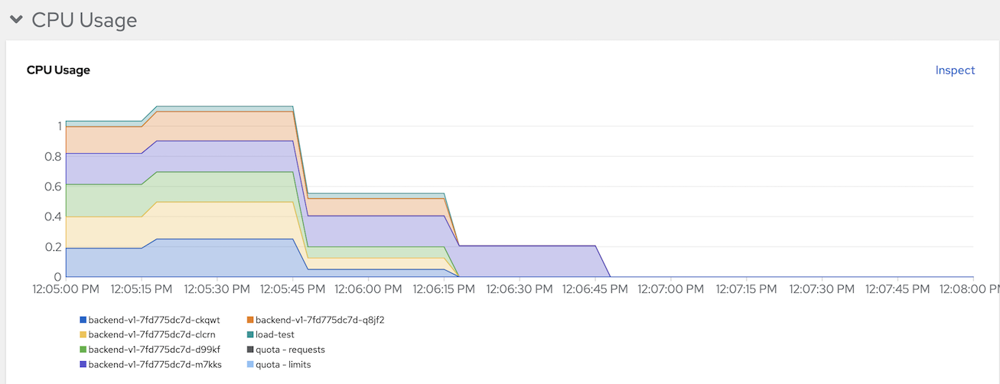
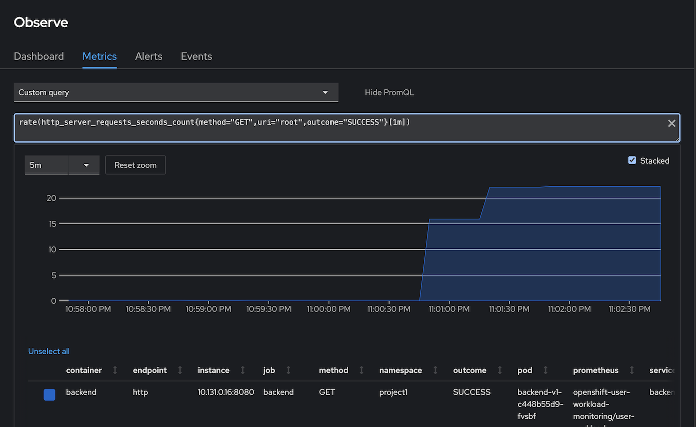

Horizontal Pod Autoscaler (HPA)
CPU
- Deploy frontend app (if you still not deploy it yet)
oc new-project project1 oc apply -f manifests/backend-v1.yaml -n project1 oc apply -f manifests/backend-service.yaml -n project1 oc apply -f manifests/backend-route.yaml -n project1 oc set env deployment backend-v1 -n project1 APP_BACKEND=https://mockbin.org/status/200 oc wait --for=condition=ready --timeout=60s pod -l app=backend BACKEND_URL=http://$(oc get route backend -n project1 -o jsonpath='{.spec.host}') curl -v -k $BACKEND_URL
Review CPU HPA for deployment backend
- Scale out when average CPU utilization is greater than 20% of CPU limit
- Maximum pods is 5
Scale down to min replicas if utilization is lower than threshold for 60 sec
minReplicas: 1 maxReplicas: 5 targetCPUUtilizationPercentage: 20 behavior: scaleDown: policies: - type: Pods value: 1 periodSeconds: 60 selectPolicy: Min stabilizationWindowSeconds: 70 scaleUp: policies: - type: Pods value: 5 periodSeconds: 70 selectPolicy: Max stabilizationWindowSeconds: 0
oc apply -f manifests/backend-cpu-hpa.yaml -n project1
- Check HPA status
watch oc get horizontalpodautoscaler/backend-cpu -n project1
Output
NAME REFERENCE TARGETS MINPODS MAXPODS REPLICAS AGE
backend-cpu Deployment/backend <unknown>/20% 1 5 0 2m4s
Load test with K6
- 50 threads
- Duration 3 minutes
- Ramp up 30 sec
Ramp down 30 sec
URL=http://backend.project1:8080 oc run load-test -n project1 -i \ --image=loadimpact/k6 --rm=true --restart=Never \ -- run - < manifests/load-test-k6.js \ -e URL=$URL -e THREADS=50 -e DURATION=3m -e RAMPUP=30s -e RAMPDOWN=30sOutput

Check pods CPU in developer console

Stop load test and wait 1 minutes to scale down to 1 replica.

Remark: k6 will run as pod name
load-testfor 4 minutes if you want to force stop before 4 minutes just deleteload-testpodoc delete pod load-test -n project1Memory
Deploy Memory Leak App
resources: requests: cpu: "0.1" memory: 100Mi limits: cpu: "0.2" memory: 200Mi env: - name: APP_DISHSIZE value: "10485760"Deploy Leak App
oc apply -f manifests/leak.yaml -n project1 oc expose deployment leak -n project1 oc expose svc leak -n project1Check for leak app memory limit

Review Memory HPA for deployment leak app
- Scale out when average memory utilization is greater than 100Mi
- Maximum pods is 3
Scale down to min replicas if utilization is lower than threshold for 60 sec
Create Memory HPA for deployment frontend v1
oc apply -f manifests/leak-memory-hpa.yaml -n project1Check HPA status
watch oc get horizontalpodautoscaler/leak-memory -n project1Output
NAME REFERENCE TARGETS MINPODS MAXPODS REPLICAS AGE leak-memory Deployment/leak 81829888/100Mi 1 3 1 5h37mTest Leak App to consume another 30 MB
curl -v http://$(oc get route leak -n project1 -o jsonpath='{.spec.host}')/eat/3 watch oc get po -l app=leak -n project1Output
< HTTP/1.1 200 OK < content-type: text/plain;charset=UTF-8 < content-length: 20 < set-cookie: 5ba5938c43542864828d859a0c1ca92a=00adce54797d4ef2002e330336942b56; path=/; HttpOnly < cache-control: private < * Connection #0 to host leak-project1.apps.cluster-27h8w.27h8w.sandbox74.opentlc.com left intact Added 31457280 bytesCheck that another leak pod is created
NAME READY STATUS RESTARTS AGE leak-74d885844d-s4vjz 1/1 Running 0 26s leak-74d885844d-vrx6s 1/1 Running 0 2m45sCheck HPA status again
NAME REFERENCE TARGETS MINPODS MAXPODS REPLICAS AGE leak-memory Deployment/leak 127311872/100Mi 1 3 2 97sCheck memory utilization from Developer console

Custom Metrics Autoscaler
Configure User Workload Monitoring
- Enable user workload monitoring
Create Service Monitoring to monitor backend service
oc apply -f manifests/backend-service-monitor.yaml -n project1Remove HPA by CPU and run K6 with 10 threads
oc delete hpa/backend-cpu -n project1 URL=http://backend.project1:8080 oc run load-test -n project1 -i \ --image=loadimpact/k6 --rm=true --restart=Never \ -- run - < manifests/load-test-k6.js \ -e URL=$URL -e THREADS=10 -e DURATION=3m -e RAMPUP=30s -e RAMPDOWN=30sCheck for backends's concurrent requests/sec metric
- Open Developer Console -> Observe -> Metrics -> Custom metrics
Input following PromQL to check for number of requests/min
rate(http_server_requests_seconds_count{method="GET",uri="root",outcome="SUCCESS"}[1m])Output

Install Operator
Install Custom Metrics Autoscaler Operator
Verify
oc get csv -n openshift-keda oc get po -n openshift-kedaOutput
NAME DISPLAY VERSION REPLACES PHASE custom-metrics-autoscaler.v2.10.1-253 Custom Metrics Autoscaler 2.10.1-253 Succeeded NAME READY STATUS RESTARTS AGE custom-metrics-autoscaler-operator-9c9c7c4cb-26l28 1/1 Running 0 10m
Create SacledObject
Create Service Account
oc create serviceaccount thanos -n project1Create TriggerAuthentication and assign cluster role to query thanos
TOKEN=$(oc describe serviceaccount thanos -n project1|grep Token|awk -F':' '{print $2}'|awk '$1=$1') cat manifests/cma-trigger-authentication.yaml|sed 's/TOKEN/'$TOKEN'/'|sed 's/PROJECT/project1/' | oc create -f - oc adm policy add-cluster-role-to-user cluster-monitoring-view -z thanos -n project1Create ScaledObject to scale backend pod by conncurrent request.
oc apply -f manifests/backend-scaled-object.yaml -n project1 oc get scaledobject/backend -o yaml -n project1 | grep -A4 " conditions:"Number of replicas and triggers configuration
triggers: - authenticationRef: kind: TriggerAuthentication name: keda-trigger-auth-prometheus metadata: metricName: http_server_requests_seconds_count namespace: project1 query: rate(http_server_requests_seconds_count{method="GET",uri="root",outcome="SUCCESS"}[1m]) serverAddress: https://thanos-querier.openshift-monitoring.svc.cluster.local:9092 threshold: "15" authModes: "bearer"Output
scaledobject.keda.sh/backend created conditions: - message: ScaledObject is defined correctly and is ready for scaling reason: ScaledObjectReady status: "True" type: Ready
Test
Run Load Test with K6
URL=http://$(oc get route backend -n project1 -o jsonpath='{.spec.host}') oc run load-test -n project1 -i \ --image=loadimpact/k6 --rm=true --restart=Never \ -- run - < manifests/load-test-k6.js \ -e URL=$URL -e THREADS=20 -e DURATION=3m -e RAMPUP=30s -e RAMPDOWN=30sCheck that ScaledObject is active
NAME SCALETARGETKIND SCALETARGETNAME MIN MAX TRIGGERS AUTHENTICATION READY ACTIVE FALLBACK AGE backend apps/v1.Deployment backend-v1 1 5 prometheus keda-trigger-auth-prometheus True True False 77mCheck that backend is scaled out
NAME READY STATUS RESTARTS AGE backend-v1-c448b55d9-5t2j6 1/1 Running 0 13s backend-v1-c448b55d9-5v9gm 1/1 Running 0 129mCheck concurent request. Open Developer Console and use custom query
sum by (pod)(rate(http_server_requests_seconds_count{method="GET",uri="root",outcome="SUCCESS"}[1m]))